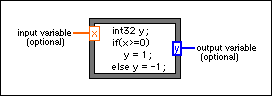

Formula Node
Owning Palette: Structures
Requires: Base Development System
Evaluates mathematical formulas and expressions similar to C on the block diagram. The following built-in functions are allowed in formulas: abs, acos, acosh, asin, asinh, atan, atan2, atanh, ceil, cos, cosh, cot, csc, exp, expm1, floor, getexp, getman, int, intrz, ln, lnp1, log, log2, max, min, mod, pow, rand, rem, sec, sign, sin, sinc, sinh, sizeOfDim, sqrt, tan, tanh. There are some differences between the parser in the Mathematics VIs and the Formula Node.

 Add to the block diagram Add to the block diagram |
 Find on the palette Find on the palette |
Refer to Creating Formula Nodes and Formula Node Syntax for more information about the Formula Node and the Formula Node syntax. Also, keep in mind the allowed operators in the Formula Node.
Formula Nodes have the following restrictions:
- Formula Nodes accept only the period (.) as a decimal separator. The nodes do not recognize localized decimal separators.
- Formula Nodes accept only pi as a constant. The constant is case-sensitive.
- You cannot add Formula Nodes to a VI on which you enable inlining.